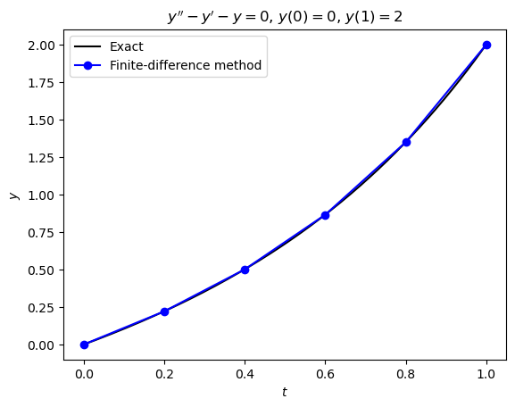
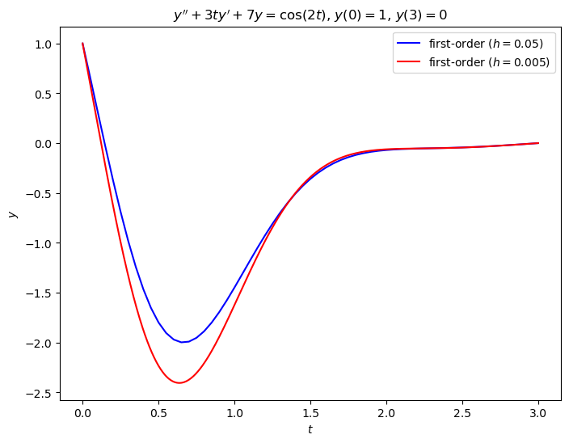
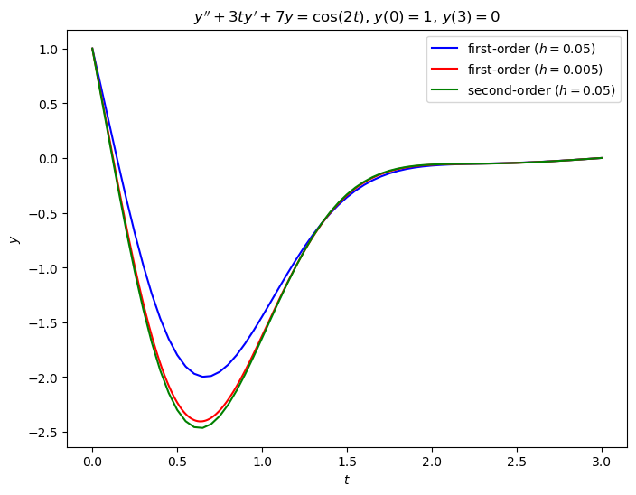

5.3. The finite-difference method#
The finite-difference method solves a boundary value problem by approximating derivatives at a finite number of grid points. This converts the differential equation into a system of algebraic equations that can be solved using standard linear algebra techniques. Unlike the shooting method, which transforms a BVP into an IVP, the finite-difference method works directly with the boundary conditions.
Consider the equally spaced grid
where
or alternatively
Let \(y_i \approx y(t_i)\) then the derivatives of \(y_i\) are approximated using values of neighbouring nodes \(y_{i+1}\), \(y_{i-1}\) etc. using expressions derived by truncating the Taylor series and rearranging to make the derivative term the subject.
Approximation |
Error |
Name |
|---|---|---|
\(y'(t_i) \approx \dfrac{y_{i+1} - y_i}{h}\) |
\(O(h)\) |
Forward difference |
\(y'(t_i) \approx \dfrac{y_i - y_{i-1}}{h}\) |
\(O(h)\) |
Backward difference |
\(y'(t_i) \approx \dfrac{y_{i+1} - y_{i-1}}{2h}\) |
\(O(h^2)\) |
Central difference |
\(y''(t_i) \approx \dfrac{y_{i-1} - 2 y_i + y_{i+1}}{h^2}\) |
\(O(h^2)\) |
Symmetric difference |
The order of the error indicates how the approximation improves as the mesh is refined. For example, a second-order approximation has an error proportional to \(h^2\), so halving the step size reduces the error by approximately a factor of four.
The solution to a boundary value problem using the finite-difference method is determined by approximating the derivatives in the ODE using finite-differences. Consider the following boundary value problem
Replacing \(y''\) by a finite-difference approximation at each interior node \(t_i\), \(i = 1, \ldots, n-1\), produces \(n - 1\) algebraic equations. Together with the two boundary conditions \(y_0 = a\) and \(y_n = b\), this gives a total of \(n + 1\) equations for the unknowns \(y_0, \ldots, y_n\).
Example 5.4
Use the finite-difference method to solve the following boundary value problem using a step length of \(h = 0.2\)
Solution
The second-order central difference and symmetric difference approximations of \(y'\) and \(y''\) respectively are
Substituting into the differential equation
which can be simplified to
The boundary values are \(y_0 = 0\) and \(y_n = 2\), so the algebraic system is
This is a system of linear equations (since the differential equation is linear), so we can write this as the matrix equation \(A \mathbf{y} = \mathbf{b}\)
where
The first and last rows enforce the boundary conditions \(y_0 = 0\) and \(y_n = 2\).
The resulting coefficient matrix is tridiagonal, meaning that only the main diagonal and the two neighbouring diagonals contain non-zero entries. Such systems can be solved efficiently using specialised algorithms such as the Thomas algorithm.
If we use a step length of \(h=0.2\) then
and the matrix equation is
Solving the tridiagonal linear system gives the approximate solutions
A plot comparing the finite-difference solution to the exact solution
is shown in Fig. 5.4.

Fig. 5.4 Solution to the boundary value problem \(y'' - y' - y = 0\), \(y(0) = 0\), \(y(1) = 2\) using second-order finite-differences.#
5.3.1. Code#
The code below calculates the solution to the boundary value problem in Example 5.4.
import numpy as np
import matplotlib.pyplot as plt
# Define BVP parameters
tspan = [0, 1] # boundaries of the t domain
bvals = [0, 2] # boundary values
h = 0.2 # step length
# Compute t values
n = int((tspan[1] - tspan[0]) / h)
t = np.arange(n + 1) * h
# Define linear system
b = np.zeros(n + 1)
b[0] = bvals[0]
b[-1] = bvals[1]
A = np.eye(n + 1)
for i in range(1, n):
A[i,i-1] = 2 + h
A[i,i] = -4 - 2 * h**2
A[i,i+1] = 2 - h
# Solve linear system
y = np.linalg.solve(A, b)
# Define exact solution
def exact(t):
return (2 * np.exp((1 - np.sqrt(5)) * (t - 1) / 2) * (np.exp(np.sqrt(5) * t) -1)) / (np.exp(np.sqrt(5)) - 1)
# Compute exact solution
t_exact = np.linspace(0, tspan[1], 200)
y_exact = exact(t_exact)
# Plot solution
fig, ax = plt.subplots()
plt.plot(t_exact, y_exact, "k-", label="Exact")
plt.plot(t, y, "bo-", label=f"Finite-difference method")
plt.xlabel("$t$")
plt.ylabel("$y$")
plt.title("$y'' - y' - y = 0$, $y(0) = 0$, $y(1) = 2$")
plt.legend()
plt.show()
% Define BVP parameters
tspan = [0, 1];
bvals = [0, 2];
h = 0.2;
% Compute t values
n = floor((tspan(2) - tspan(1)) / h);
t = (0 : n) * h;
% Define linear system
d = zeros(n + 1, 1);
d(1) = bvals(1);
d(end) = bvals(2);
A = eye(n + 1);
for i = 2 : n
A(i, i-1) = 2 + h;
A(i, i) = -4 - 2 * h^2;
A(i, i+1) = 2 - h;
end
% Solve linear system
y = A \ d;
% Define exact solution
exact = @(t, y) 2 * exp((1 - sqrt(5)) .* (t - 1) / 2) .* (exp(sqrt(5) * t) - 1) / (exp(sqrt(5)) - 1);
% Compute exact solution
texact = linspace(tspan(1), tspan(2), 100);
yexact = exact(texact);
% Plot solution
clf
plot(texact, yexact, 'k', LineWidth=2)
hold on
plot(t, y, 'b-o', LineWidth=2, MarkerFaceColor='b')
hold off
xlabel("$t$", Interpreter="latex")
ylabel("$y$", Interpreter="latex")
title("$y'' - y' - y = 0$, $y(0) = 0$, $y(1) = 2$", Interpreter="latex")
legend(["Exact", "Finite-difference method"], Location="northwest")
axis padded
5.3.2. Mesh refinement versus higher-order approximations#
The solutions seen in Example 5.4 seem to show that the finite-difference method produces reasonably accurate results for this boundary value problem. There are two common ways to improve the accuracy of a finite-difference solution:
decrease the step length \(h\) (increase the number of nodes)
use higher-order finite-difference approximations.
In this section we compare these approaches and investigate their effect on the accuracy of the numerical solution.
Consider the solution of the following BVP using the finite-difference method
Substituting the finite-difference approximations
into the differential equation gives
Note that although the second derivative approximation is second-order accurate, the forward-difference approximation for \(y'\) is only first-order accurate. Consequently, the overall finite-difference scheme has a global error of order \(O(h)\).
The linear system is
where
The solution of this tridiagonal linear system is shown in Fig. 5.5 for \(h=0.05\) and \(h = 0.005\). Since the method is first-order accurate, reducing the step length by a factor of 10 should reduce the error by approximately a factor of 10.

Fig. 5.5 Solutions to the boundary value problem \(y'' + 3ty' + 7y = \cos (2t)\), \(t \in [0,3]\), \(y(0) = 1\), \(y(3) = 0\) using first-order finite-difference approximations with \(h=0.05\) and \(h=0.005\).#
To obtain a more accurate solution, instead of increasing the number of nodes we could use the central difference approximation to approximate \(y'\)
Substituting into the differential equation gives
Writing as a matrix equation
where
The solution using the second-order finite difference method with \(h=0.05\) has been plotted against the first-order solution using \(h=0.05\) and \(h=0.005\) in Fig. 5.6. The second-order method with \(h=0.05\) uses approximately one-tenth as many intervals as the first-order method with \(h=0.005\), yet produces a solution of comparable accuracy. This illustrates that increasing the order of the approximation can be more effective than simply refining the mesh.

Fig. 5.6 Solutions to the boundary value problem \(y'' + 3ty' + 7y = \cos (2t)\), \(t \in [0,3]\), \(y(0) = 1\), \(y(3) = 0\) using first-order and second-order finite-difference approximations with \(h=0.05\) and \(h=0.005\).#